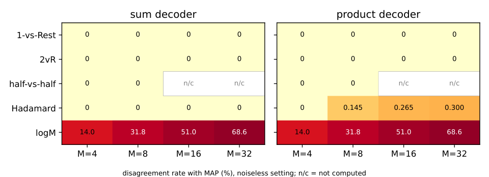

All theorems, lemmas, propositions and corollaries on ECOC decoder MAP-consistency are machine-checked in Lean 4 with Mathlib, provided as arXiv ancillary files.
Abstract
Error-Correcting Output Codes (ECOC) combine binary classifiers by the sum decoder, which totals probabilities, or the product decoder, which totals log-likelihoods. In the noiseless setting, where the binary classifiers output the true posteriors, we ask on which code matrices each decoder always agrees with the Bayes-optimal (MAP) class. For the sum decoder the answer is known: the code must be equidistant (James and Hastie, 1998). We answer the question for the product decoder. Two classes are compared through the votes of the columns on which they differ: the sum decoder decides by their sample mean, the product decoder by an M-estimator with influence function artanh, and each vote is the MAP margin plus a bias determined by the other classes alone. Our main theorem states that the product decoder is MAP-consistent if and only if, for every class pair, the columns on which the two classes differ are matched with the columns obtained by swapping the two classes (or their complements), and equivalently if and only if the code is a union of n-vs-Rest codes. Efficient equidistant codes are therefore excluded: Hadamard codes ($M\ge 8$), which meet the Plotkin bound with $M-1$ columns, have no such pairs, and for the Sylvester type the reversal margin can be at least a constant 0.0182 independent of $M$. All theorems are machine-checked in Lean 4. On six real datasets with estimated probabilities, the product decoder is slightly more accurate when each column is calibrated, and the sum decoder is better when the calibration error differs across columns; in either case the decoders disagree only near ties.
Problem
Error-Correcting Output Codes combine binary classifiers using either a sum decoder or a product (log-likelihood) decoder. For the sum decoder, MAP-consistency in the noiseless setting is known to require an equidistant code. The question here is which code matrices make the product decoder MAP-consistent.
Approach
Each class-pair comparison is expressed as a sample of column votes. The sum decoder decides by the sample mean of the votes, and the product decoder by an artanh M-estimator. Each vote decomposes into the MAP margin plus a bias that depends only on the background classes. All results in Sections 3–6, including the appendix proofs, are machine-checked in Lean 4 with Mathlib. Experiments cover noiseless numerical checks and six real datasets.
Results
The product decoder is MAP-consistent if and only if every class pair has pair structure, equivalently if and only if the code is a union of n-vs-Rest codes. Hadamard codes with M≥8 therefore fail, and for the Sylvester type the reversal margin is at least 0.0182. On real data the product decoder is slightly better when each column is calibrated, the sum decoder is better when calibration error varies across columns, and the two disagree only near ties.

Figure 2: Disagreement rate with MAP in the noiseless setting (%, mean over four series). Left: sum; right: product. The sum decoder is 0 on all equidistant codes (all but logM), the product decoder only on codes with pair structure (1-vs-Rest, 2vR, half-vs-half, Hadamard with M=4 ) (Proposition 1 and Theorem 1 ). n/c: not computed. Half-vs-half has \binom{M}{M/2}/2 columns (6435 at M=16 , about 3
Code
Equidistant
Pair structure
Sum
Product
1-vs-Rest
Yes, d=2
Yes
Yes
Yes
2vR
Yes, d=2(M-2)
Yes
Yes
Yes
Hadamard (M=4)
Yes, d=2
Yes
Yes
Yes
Hadamard (M≥8)
Yes, d=M/2
No
Yes
No
logM
No
No
No
No
Code families and MAP-consistency of the sum and product decoders